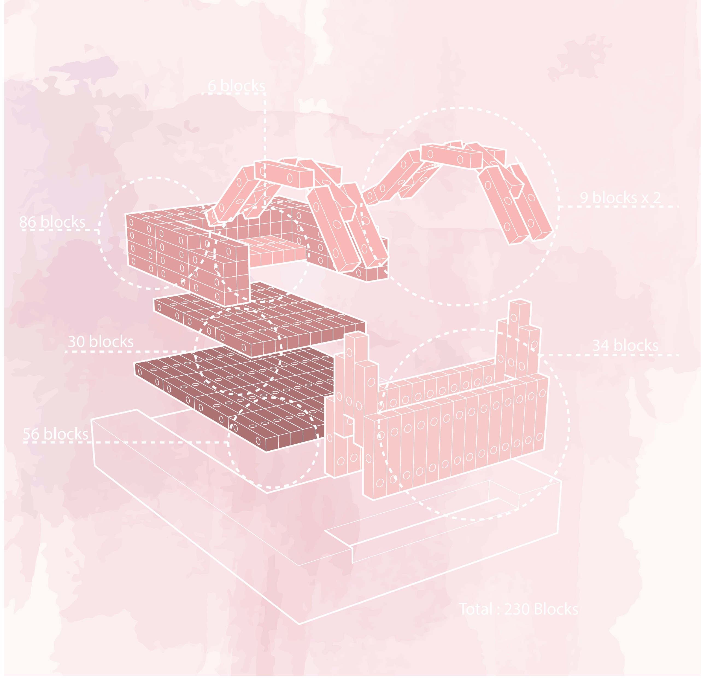
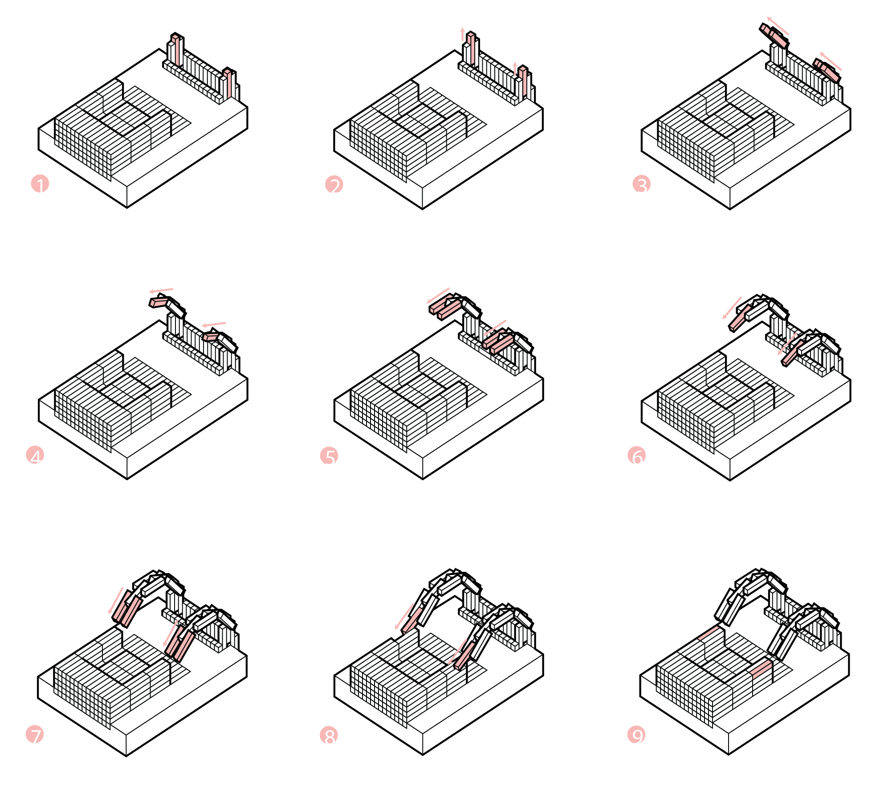
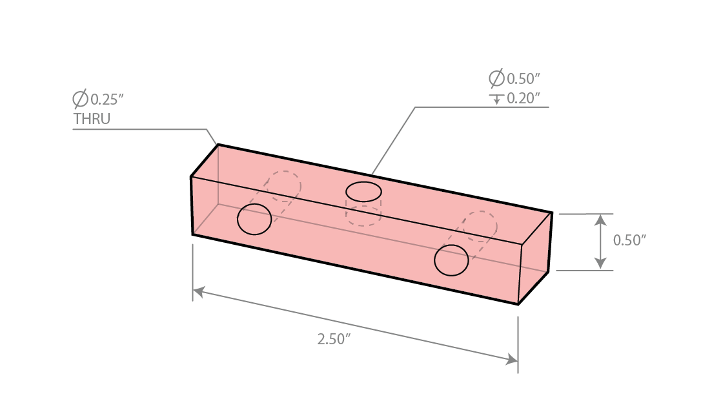

Year: Spring 2017
Project: Design and Constructed
Studio: Architecture Design Studio: Foundation II
Partner: Cameron Drayton
Professors: Gretchen Craig, Lucas Bartosiewicz, Annie Ranttila, Kai Gutschow


Overview
Each student was given a di erent kitchen tool. I was given a froster. After studying the shape of the tool and studying how it moves, students were paired up to try and create a motion model that represented both of their kitchen tools. My partner’s tool was a potato cutter. The concept of our model was to make the entire structure using a simpler module, which was a 2 1/2” by 1/2” rectangular piece with three holes: a 1/2” hole drilled 1/5” deep through the center of one face and two 1/4” holes drilled all the way through and located 1/3 of the way in from both ends of one face. The structure was made up of 230 pieces of this module. The verbs that this model represented were: layering, splitting, time, and bending.

Modular Piece
There are two sides to the model that represent the two different kitchen tools. The thinner side represents the froster, which is a tool that shakes and is much less stationary than a potato cutter. The two sides are then connected by a bridge. The bridge was created to help emphasize the contrast between the two sides, showing the motion of a piece moving from the one side to the other in a continuous motion. Then, it shows the act of placing the "final piece" on the potato cutter side of the model where there is an empty space.
The Parts
This structure is created using three di erent systems. Each system is made of several pieces of the simpler rectangular module. Each of these systems are used in the three di erent parts of this model: the froster side, the potato cutter side, and the bridge.